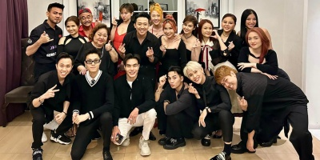

1 năm hoạt động nghệ thuật đầy thăng hoa của ca sĩ Gen Z Juky San

Trương Quỳnh Anh: Làm mẹ đơn thân dành hết tình yêu cho con

Lê Giang: "Tôi có 1 cuộc sống rất sung túc"

Nguyên Newin không đặt nặng việc bị gọi là "người đẹp đi hát"
Cuộc sống hiện tại của Lê Thúy - Tuyết Lan sau 12 năm show người mẫu
Loạt ảnh nhan sắc thời trẻ của mỹ nhân đẹp nhất Philippines
Những quy tắc của hội bạn thân Trấn Thành: Chia tiền sòng phẳng
Dàn sao Việt "ồ ạt" có động thái bảo vệ Trấn Thành sau lời đính chính
Nhan sắc và cuộc sống hiện tại của Hồ Quỳnh Hương sau nhiều năm ở ẩn
Diva Hồng Nhung U50 sang Thái thụ tinh nhân tạo, 2 con giờ lớn phổng
Cuộc sống hiện tại của Dara (2NE1) sau khi rời YG Entertainment
Đợi mãi đàn chị U50 mới lên xe hoa, Tăng Thanh Hà mừng như được mùa

Con trai Marian Rivera 3 tuổi đã cưỡi ngựa, điển trai nhờ gen trội
Baifern khoe diện mạo mới cá tính, tóc cắt “nham nhở”